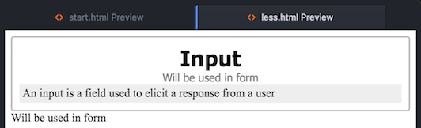
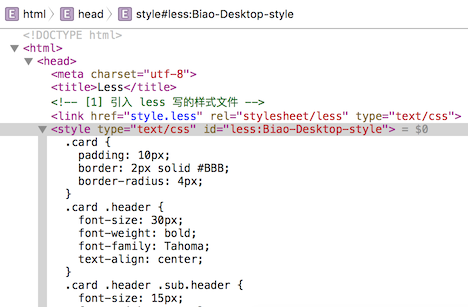

使用 Less 最直接的好处是可以使用层级的风格写样式，当然它还可以定义变量、函数等，比 CSS 好管理，而且语法和 CSS 差别不大，这里介绍 HTML 里使用 Less 代替 CSS:
方法一: less.js 解析 Less 文件为 CSS
写 Less 样式
HTML 中引入 Less 文件
1
<link href="style.less" rel="stylesheet/less" type="text/css"/>
HTML 中引入 less.js，它的作用是把上面引入的 Less 文件解析为 CSS，放到 HTML 的 head 中，less.js 会自动的把 Less 样式翻译为 css
1
<script src="https://cdn.staticfile.org/less.js/2.7.1/less.min.js"></script>
方法二: Atom 在保存 Less 文件时自动编译为 CSS 文件
使用 Atom 的插件 less-autocompile，在保存 less 文件时 Atom 会自动生成对应的 css 文件，那么就可以直接在 HTML 里引用 css 了，这样就不需要担心像上面这个方法造成的性能，网络访问等问题了，90% 的情况下没啥问题，只是理论上的问题而已。
需要在 Less 文件的第一行添加下面的内容，告诉生成文件的路径，规则等:
1 | // out: style.css, sourcemap: false, compress: false |
案例
1 | // 文件名: style.less |
1 |
|
效果为:

如果查看网页的元素，会发现在 head 里生成了 style:

上面的 Less 解析为 CSS 花了大概 14 毫秒，性能应该不是问题，而且是在浏览器端解析的，对服务器没有任何影响。
If you’re using a 3rd party CMS, have limited control of server side, and don’t want to worry about syncing issues with the produced CSS, it’s an option. As the stack overflow discussions point out, Less caches the translated CSS in newer browsers. But our site also requires JavaScript to function anyway, so if JS is turned off, they can’t really use the site anyway. Don’t get me wrong, we’re still looking for a preprocessing method, but so far performance hasn’t really been an issue.
Less 语法简介
变量
Less 的变量名使用 @ 符号开始：
1 | @mainColor: #0982c1; |
Mixins
Mixins 有点像是函数或者是宏，当你某段 CSS 经常需要在多个元素中使用时，你可以为这些共用的 CSS 定义一个 Mixin，然后你只需要在需要引用这些 CSS 地方调用该 Mixin 即可:
1 | /* LESS mixin error with (optional) argument @borderWidth which defaults to 2px if not specified */ |
注释
有两种注释风格，但是有细微区别:
// comments的注释不会出现在 style 中/* comments*/的注释会出现在 style 中
嵌套
如果我们需要在CSS中相同的 parent 引用多个元素，这将是非常乏味的，你需要一遍又一遍地写 parent。例如：
1 | section { |
而如果使用 Less，就可以少些很多单词，而且父子节点关系一目了然，下面是 Less 的嵌套语法：
1 | section { |